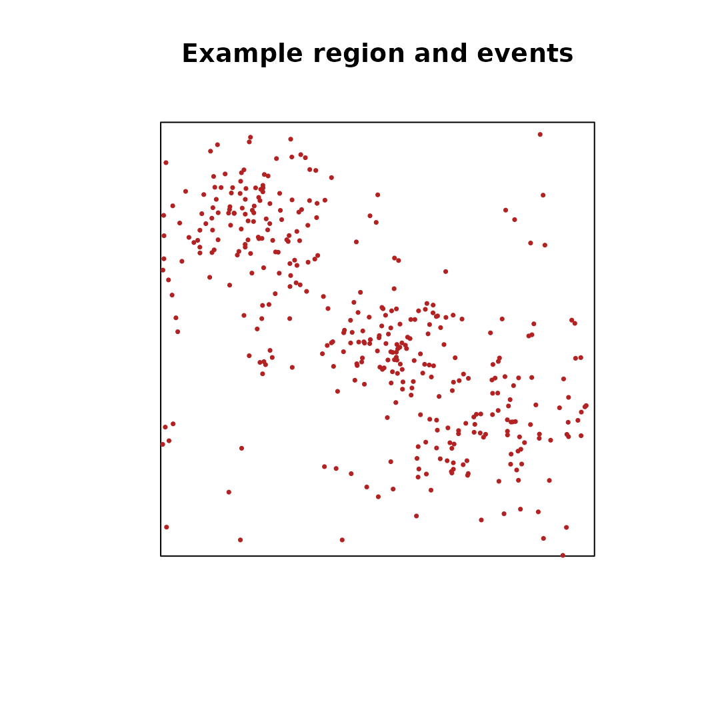
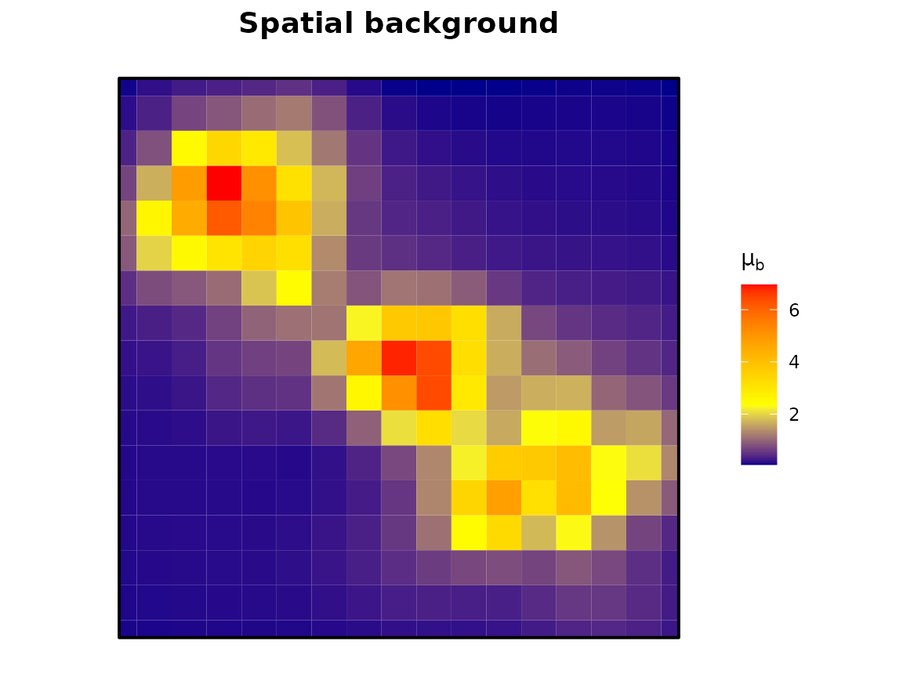
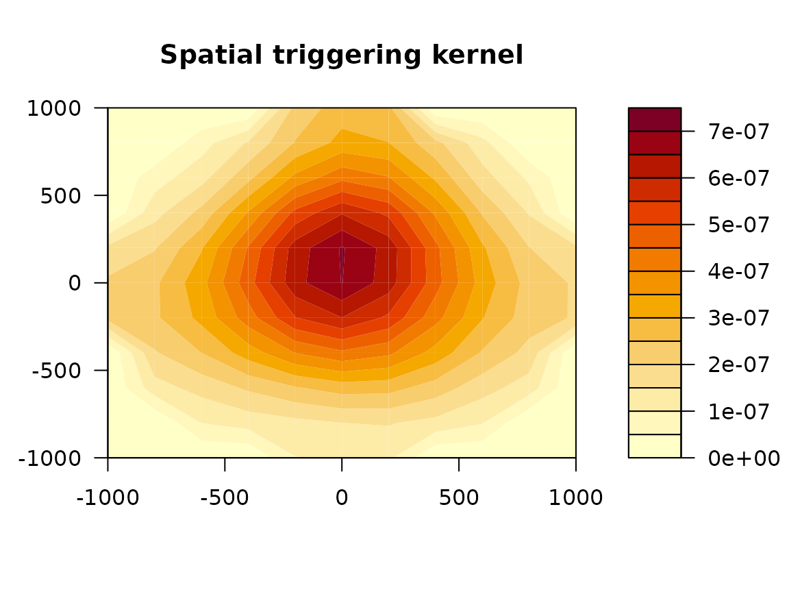
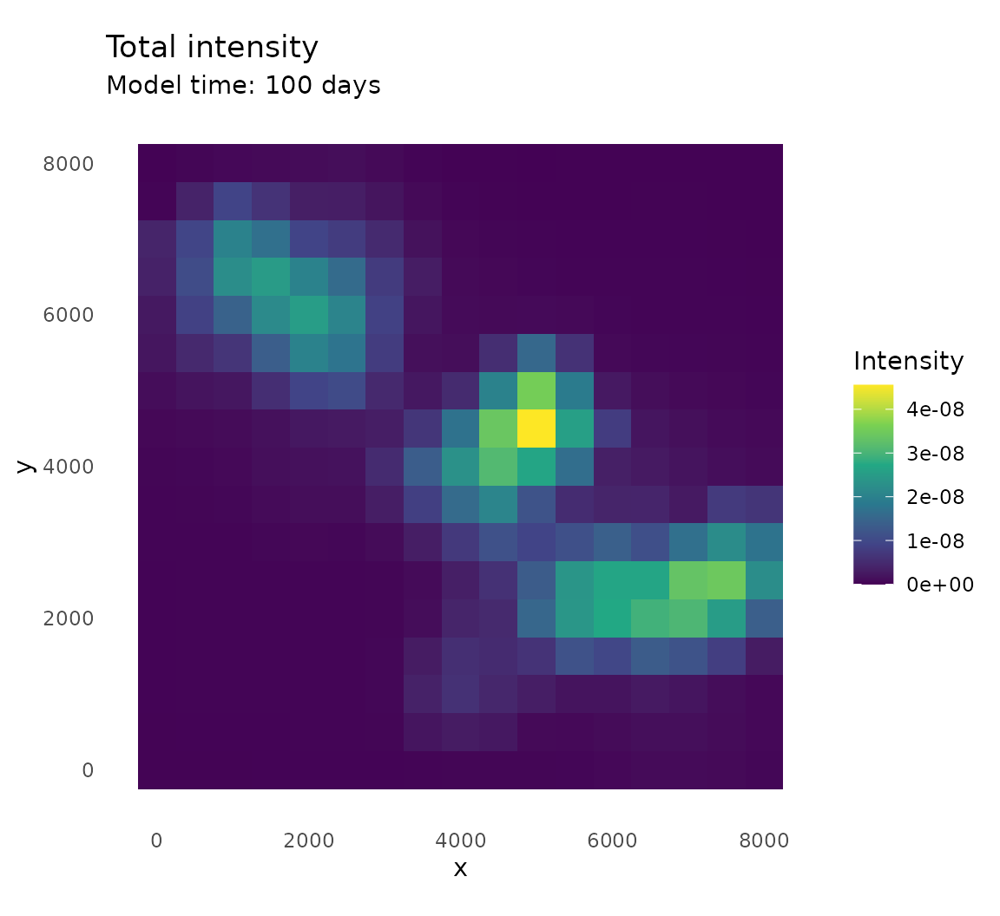
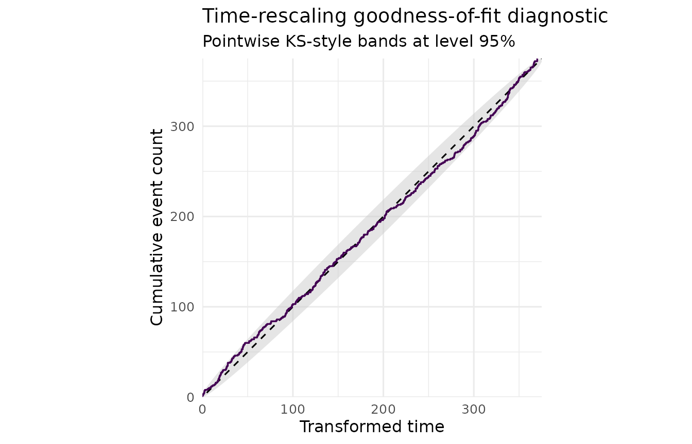
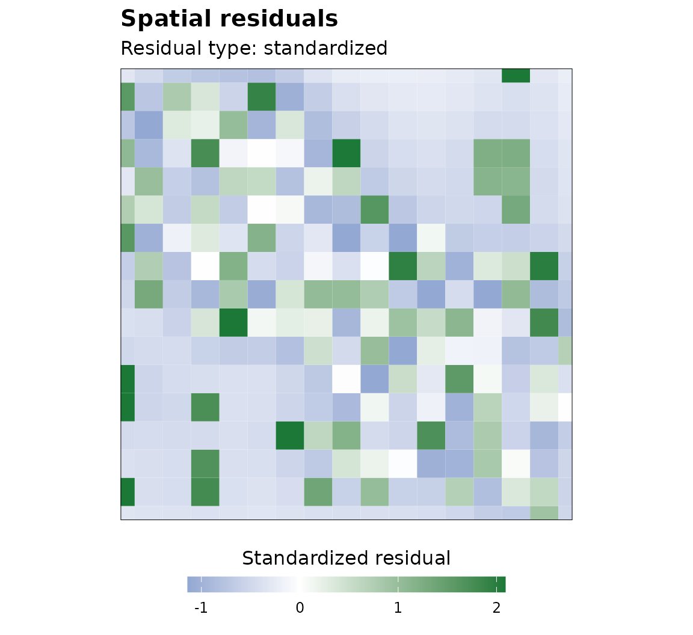

Introduction
spHawkes fits semi-parametric self-exciting (Hawkes)
spatio-temporal point process models to event data. Crime records are
the motivating application, and fitting uses a stochastic-declustering
EM algorithm following Zhuang & Mateu (2019).
The model decomposes the observed event intensity into two parts:
A background intensity, , describing where and when events occur independently of earlier observed events. The background is represented by a spatial surface and weekly, monthly, and long-term temporal multipliers, all estimated non-parametrically.
-
A self-exciting (triggering) component,
in which an earlier event at location and time temporarily raises the rate of later events at location and time . Here, is the temporal triggering kernel, is the spatial triggering kernel, and is the branching-ratio parameter.
This vignette demonstrates an end-to-end workflow on a small
simulated dataset bundled with the package. It shows
how to prepare point-event data, fit a model with
[fit_semihawkes()], inspect its components and convergence,
and assess goodness of fit.
Simulated data are used instead of real data so that the example is
reproducible and practical to build during R CMD check. The
final section highlights the key choices needed for a real dataset.
Example data
spHawkes expects two sf inputs:
points: ansfobject with one row per event, ansfc_POINTgeometry column, and a date column of classDate.region: ansforsfcobject withPOLYGONorMULTIPOLYGONgeometry defining the study-area boundary.
Both inputs must use a projected coordinate reference system (CRS) and their CRS must be identical or compatible. Kernel bandwidths and distances use the CRS’s linear units, so the package rejects longitude/latitude coordinates. It also warns when a projected CRS does not use metres as its linear unit.
The package includes sim_events, with 375 simulated
events, and sim_region, an 8 km × 8 km study area. Both use
EPSG:32717, a metre-based UTM projection.
These are not real records. They were simulated from
a branching process containing structure that the model should recover:
three spatial hotspots on a uniform floor, a background rate that rises
through time, elevated weekend activity, and triggered offspring close
to a parent in both space and time. The generating branching ratio is
.
See ?sim_events for the full dataset description and
data-raw/make-example-data.R in the package source for the
generating code.
sim_events
#> Simple feature collection with 375 features and 2 fields
#> Geometry type: POINT
#> Dimension: XY
#> Bounding box: xmin: 36.88059 ymin: 13.28927 xmax: 7847.402 ymax: 7776.33
#> Projected CRS: WGS 84 / UTM zone 17S
#> First 10 features:
#> id date geometry
#> 1 1 2021-01-03 POINT (1830.293 6556.409)
#> 2 2 2021-01-04 POINT (3756.024 3169.658)
#> 3 3 2021-01-08 POINT (3719.077 3653.554)
#> 4 4 2021-01-10 POINT (3616.287 3547.525)
#> 5 5 2021-01-14 POINT (4467.71 3211.679)
#> 6 6 2021-01-15 POINT (1886.857 6790.321)
#> 7 7 2021-01-15 POINT (4310.1 3621.276)
#> 8 8 2021-01-17 POINT (1884.784 6836.937)
#> 9 9 2021-01-30 POINT (5256.093 5247.663)
#> 10 10 2021-02-06 POINT (1484.883 6031.847)
sim_region
#> Simple feature collection with 1 feature and 1 field
#> Geometry type: POLYGON
#> Dimension: XY
#> Bounding box: xmin: 0 ymin: 0 xmax: 8000 ymax: 8000
#> Projected CRS: WGS 84 / UTM zone 17S
#> name geometry
#> 1 Example city POLYGON ((0 0, 8000 0, 8000...
plot(st_geometry(sim_region), main = "Example region and events")
plot(
st_geometry(sim_events),
add = TRUE,
pch = 16,
cex = 0.5,
col = "firebrick"
)
The raw pattern suggests spatial hotspots and local clustering. The model aims to distinguish persistent background structure from short-lived self-excitation.
Step 1: prepare and validate events
[prepare_events()] validates the input data and makes
the analysis window explicit. It checks geometry types and CRS,
reprojects points to match region where
appropriate, filters events to the selected region and date range, and
reports the number of retained and dropped events.
ev <- prepare_events(
points = sim_events,
region = sim_region,
date_col = "date",
start_date = "2021-01-01",
end_date = "2024-01-01"
)
print(ev)
#> <semihawkes_events>
#> Study period : 2021-01-01 to 2024-01-01 (TT = 1095.0 days)
#> Events kept : 375 / 375 input rows
#> Dropped : 0 outside region, 0 outside date range
#> CRS : EPSG:32717
summary(ev)
#> <semihawkes_events>
#> Study period : 2021-01-01 to 2024-01-01 (TT = 1095.0 days)
#> Events kept : 375 / 375 input rows
#> Dropped : 0 outside region, 0 outside date range
#> CRS : EPSG:32717
#> coorx coory date days
#> Min. : 36.88 Min. : 13.29 Min. :2021-01-03 Min. : 2.0
#> 1st Qu.:1892.80 1st Qu.:2772.06 1st Qu.:2021-12-22 1st Qu.: 355.5
#> Median :4002.70 Median :4066.16 Median :2022-10-20 Median : 657.0
#> Mean :3793.78 Mean :4204.03 Mean :2022-09-08 Mean : 615.8
#> 3rd Qu.:5394.78 3rd Qu.:5822.87 3rd Qu.:2023-07-11 3rd Qu.: 921.0
#> Max. :7847.40 Max. :7776.33 Max. :2023-12-31 Max. :1094.0
#> month
#> Min. : 0.00
#> 1st Qu.: 3.00
#> Median : 6.00
#> Mean : 5.68
#> 3rd Qu.: 9.00
#> Max. :11.00Two additional preprocessing steps enrich the event object before fitting:
[
add_adaptive_bandwidth()] assigns a spatial bandwidth to each event using a k-nearest-neighbour rule.[
add_bg_integral()] uses Monte Carlo integration to estimate the part of each background kernel that lies within the study region. This corrects for kernel mass that would otherwise fall outside the region.
ev <- add_adaptive_bandwidth(
ev,
k = 5,
min_dist = 150,
min_bandwidth = 300
)
ev <- add_bg_integral(ev, n_mc = 500, seed = 1)
head(ev$events[, c(
"coorx",
"coory",
"days",
"bandwidth",
"bg.integral"
)])
#> coorx coory days bandwidth bg.integral
#> 1 1830.293 6556.409 2 300.0000 0.6363517
#> 2 3756.024 3169.658 3 425.5880 1.0000000
#> 3 3719.077 3653.554 7 301.1663 1.0000000
#> 4 3616.287 3547.525 9 402.8765 1.0000000
#> 5 4467.710 3211.679 13 300.0000 0.5050622
#> 6 1886.857 6790.321 14 314.9938 0.8307711[fit_semihawkes()] runs both preprocessing steps
internally. They are shown separately here to make the model-fitting
pipeline visible.
Step 2: fit the model
[fit_semihawkes()] prepares the data, constructs initial
estimates, and alternates E-step and M-step updates through
[em_step()] until a stopping condition is reached.
Two arguments must be chosen for the data at hand:
cell_size: the side length of each spatial background grid cell, in the CRS’s linear units. It should be small enough to represent meaningful background variation without making the spatial grid unnecessarily large. This vignette uses 500 m cells for an 8 km × 8 km region.cache_dir: a location where the package stores per-event spatial edge-correction marks. It is created if needed.
The fit also sets the triggering kernel’s reach to 1 km from each
event, through trigger_window_dist and
trigger_spatial_args = list(x_range = 1000). That is the
default, but the reach deserves careful thought for every dataset:
Working with a real dataset, below, explains how to choose
it.
The vignette caps the number of EM iterations to keep build time reasonable. A substantive analysis should use the defaults or dataset-specific settings, then inspect convergence carefully.
The main convergence controls are:
-
n_iter: maximum number of EM iterations; -
tol: stop when the absolute change in log-likelihood falls below this threshold; and -
tol_A: stop when the fitted branching ratio falls below this threshold, indicating negligible triggering.
The stopping reason is stored in fit$stop_reason as
"llik_converged", "A_below_tol_A", or
"max_iter".
cache_dir <- tempfile("spHawkes-marks-")
dir.create(cache_dir)
fit <- fit_semihawkes(
points = sim_events,
region = sim_region,
date_col = "date",
cell_size = 500,
cache_dir = cache_dir,
bandwidth_args = list(
k = 5,
min_dist = 150,
min_bandwidth = 300
),
trigger_window_dist = 1000,
trigger_spatial_args = list(x_range = 1000),
n_iter = 3,
verbose = FALSE
)
print(fit)
#> <semihawkes_fit>
#> 3 iterations (stopped: max_iter)
#> mu = 3.30061e-09, A = 0.454985, llik = -7152.27
#> summary() for the background/triggering decompositionBecause this example deliberately uses a small n_iter,
it may stop at "max_iter". Treat the fit as illustrative in
that case rather than as a converged final analysis.
Step 3: inspect convergence
fit$history is a data.frame with one row
for the initial state and one row for each subsequent EM iteration. Row
0 holds the starting values before an EM update.
Its principal columns are:
-
iteration: the EM iteration number; -
mu: the baseline-rate parameter; -
A: the branching ratio; -
llik: the log-likelihood; and -
lambda_at_all: the fitted intensity integrated over the spatial region and temporal observation window.
fit$history
#> iteration mu A llik lambda_at_all
#> 1 0 2.679900e-09 0.5982269 -7214.606 375
#> 2 1 3.077979e-09 0.5061180 -7165.729 375
#> 3 2 3.209258e-09 0.4758171 -7156.143 375
#> 4 3 3.300606e-09 0.4549848 -7152.265 375
fit$n_iter
#> [1] 3
fit$stop_reason
#> [1] "max_iter"The default fitted-model plot, which = "history",
displays the available convergence diagnostics together.
plot(fit, which = "history")For a real analysis, inspect this history and investigate a fit that
reaches "max_iter" before the log-likelihood
stabilizes.
Step 4: inspect fitted components
The fitted background has three temporal components:
- a weekly day-of-week cycle;
- a monthly month-of-year cycle; and
- a long-term trend.
They are available as fit$weekly,
fit$monthly, and fit$trend. Each is a
"semihawkes_temporal_base" object containing:
-
$breaks: grid points used for estimation; -
$basevalue: estimated values at those grid points, normalized to have mean one; -
$period: the period for a cyclic component, orNAfor the long-term trend; and -
$fun: a vectorized interpolation function for evaluating the component at new times.
Values greater than one indicate a background rate above the component’s average level. The weekly and monthly functions wrap values around their respective cycles. The long-term trend returns zero outside the fitted observation window.
The spatial background surface is stored in
fit$background. The temporal and spatial triggering kernels
are stored in fit$temporal_trigger and
fit$spatial_trigger.
plot(fit, which = "background")

The simulated data include weekly variation, an increasing long-term
trend, spatial hotspots, and short-range triggering. The corresponding
fitted components should show related structure. The generating settings
in ?sim_events provide a reference for interpreting the
example.
For a real dataset, these plots remain useful, but they are estimates rather than comparisons against known truth.
Step 5: summarise the fit
summary() collects key results into an object of class
"summary.semihawkes_fit" and prints a compact report
containing:
- the number of events, observation window, and CRS;
- fitted values of
mu, , and the log-likelihood; - expected background and triggered event counts calculated from fitted event-level background probabilities;
- minimum and maximum values of fitted background and triggering components; and
- EM stopping information.
summary(fit)
#> Semi-parametric spatio-temporal Hawkes fit
#> ------------------------------------------------------------
#> Events : 375
#> Study window : 2021-01-03 to 2024-01-01 (1093 days)
#> CRS : EPSG:32717
#>
#> Parameters
#> mu (baseline rate) : 3.30061e-09 per unit area per day
#> A (branching ratio) : 0.4550 expected offspring per event
#> log-likelihood : -7152.27
#>
#> Branching structure (from fitted background probabilities)
#> background : 235.0 events ( 62.7%)
#> triggered : 140.0 events ( 37.3%)
#>
#> Fitted components (range over their support)
#> trend [ 0.5597, 1.349]
#> weekly [ 0.7364, 1.325]
#> monthly [ 0.9087, 1.162]
#> spatial background [ 0.05967, 6.955]
#> trigger (temporal) [ 0.0017, 0.06652]
#> trigger (spatial) [ 0, 7.048e-07]
#>
#> Convergence
#> 3 EM iterations, reached n_iter without converging
#> final change in log-likelihood: 3.87773The branching ratio is the expected number of direct offspring per event under the fitted triggering mechanism. With normalized triggering kernels in a stationary branching process, it corresponds to the long-run expected triggered fraction.
The branching-structure output in summary(fit) is a
related but different finite-sample quantity: the mean fitted
probability that each observed event is attributed to triggering rather
than background. These values need not be identical because the fitted
analysis has a finite observation window, edge effects, and a
time-varying background.
Visualise intensity snapshots
The fitted object stores the estimated model components. To display
their combined intensity over space at a specific time, first evaluate
the fitted model on a spatial grid using
background_trigger_grid().
The evaluation grid can have a different resolution from the spatial background grid used during fitting. Here, we use the same 500 m spacing to keep the example small.
grid_result <- background_trigger_grid(
fit = fit,
city = sim_region,
cell_size = 500,
days = c(100, 101, 102),
nprocs = 1
)The resulting object contains background and triggering intensity
matrices for each requested time. Model times are measured in days since
fit$events$start_date.
plot_intensity_snapshot(
grid = grid_result,
time = 100,
component = "total"
)
Use component = "background" or
component = "triggering" to display either component
separately. The same evaluated grid can be reused without refitting the
model.
Step 6: assess goodness of fit
Fitted components describe the model, but goodness-of-fit diagnostics help assess whether the fitted model leaves systematic structure in the observed event pattern.
No single diagnostic is decisive. A model can reproduce the overall event accumulation through time while still leaving spatial areas with consistently more or fewer events than expected. It is therefore useful to inspect temporal and spatial diagnostics together.
Time transformation
[gof_time_transform()] compares the observed cumulative
number of events with the cumulative expected number implied by the
fitted intensity.
gof_time <- gof_time_transform(fit, dt = 1)
plot(gof_time)
A close correspondence between observed and fitted cumulative counts, with the observed curve broadly within the reference bands, supports the adequacy of the fitted temporal intensity. This is evidence consistent with adequacy, not proof that the model is correct.
Spatial residuals
[gof_spatial_residuals()] compares observed and expected
event counts across the spatial background grid. It can reveal areas
where the fitted spatial intensity is systematically too low or too
high.
gof_spatial <- gof_spatial_residuals(fit)
plot(gof_spatial, type = "standardized")
The spatial residual plot supports three residual scales:
-
type = "raw"maps , which is the default. -
type = "relative"maps . -
type = "standardized"maps .
This example uses standardized residuals because they adjust the observed-minus-expected difference for the expected event count. This makes residuals from cells with different expected counts more directly comparable.
Blue cells have fewer observed events than expected, green cells have more observed events than expected, and white cells are close to the model expectation. By default, the colour scale is limited to the 2nd and 98th percentiles of residual values, so a small number of extreme cells does not dominate the map.
Large contiguous positive residual regions indicate locations where the model may underestimate event intensity. Large contiguous negative regions indicate locations where it may overestimate intensity. Such patterns can motivate revisiting the background grid resolution, bandwidth settings, study boundary, or model specification.
Working with a real dataset
Moving from this simulated example to real data requires careful attention to scale, assumptions, and computation.
cell_sizedetermines the spatial background-grid resolution. Choose it in relation to the study region and the scale of plausible background variation. A small cell size increases computational cost.Triggering windows determine which event pairs can be considered possible parent-offspring pairs. The arguments
trigger_window_daysandtrigger_window_dist, used by [trigger_pairs()], should reflect the plausible duration and spatial reach of triggering for the phenomenon being studied. The default spatial reach of 1 km is only a starting point. Set it, through the kernel grid’sx_range, to a few times the distance over which one event can plausibly trigger another: a much wider reach lets the kernel’s tail absorb clustering in the background and inflates the estimated branching ratio , and a reach that is too short cuts off genuine triggering. Refitting with two or three reaches shows how sensitive is to the choice.bandwidth_argscontrols smoothing of the spatial background. In particular, choosekandmin_bandwidthrelative to event density and the amount of spatial detail that can be estimated reliably.Convergence should be assessed through
fit$historyandfit$stop_reason. A fit that stops at"max_iter"should normally be investigated further before it is interpreted as final.
For longer analyses, use checkpoint_dir to save each
iteration’s state. This makes long runs easier to inspect and recover if
they are interrupted.
fit <- fit_semihawkes(
points = sim_events,
region = sim_region,
date_col = "date",
cell_size = 150,
cache_dir = "cache/marks",
checkpoint_dir = "cache/checkpoints",
n_iter = 50
)